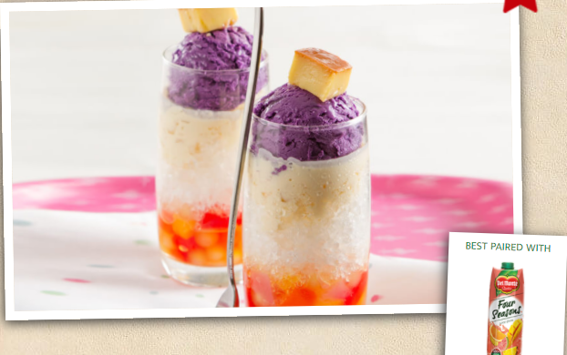

| HOME | EXERCISE 1 | EXERCISE 2 | EXERCISE 3 | EXERCISE 4 | EXERCISE 5 | EXERCISE 6 | EXERCISE 7 | EXERCISE 8 |
|---|
To cool off in the tropical heat, Philippine locals do one of three things: head for the nearest air-conditioned mall, dip into a swimming pool, or indulge themselves with a cup of their favourite ice-cold Halo-halo. It’s a Filipino dessert classic that warms the hearts of many with glowing pride and nostalgia, and is an absolute must-try when visiting the country. This icy treat is known for its flavorful taste, and has a rich history that dates back to the pre-war Japanese period. While its Filipino name means ‘mix-mix’ in English, this favourite shaved ice dessert was introduced to the Filipinos by the Japanese settlers. According to historians, the Japanese had sweet desserts called ‘Mitsumame‘ or ‘mongo con hielo‘ and ‘kakigori’ which closely resemble the Filipinos’ Halo-halo. The Japanese Mitsumame is an icy refreshment which has lots of monggo beans as the main ingredient. According to historical accounts, Nippon immigrants (who were also found to be part of the Nippon Army) were its proprietors and after they introduced the dessert, locals made variations by adding fruit preserves and custards. The cheapest order at that time was priced at 1 kusing or 1 centavo.
INGREDIENTS
PREPARATION